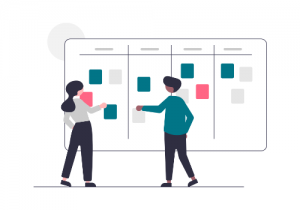
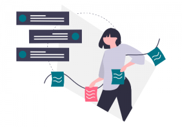
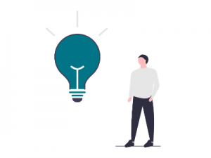
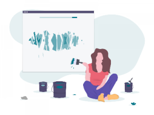

Work interdisciplinarily
Collaborate with students from different disciplines and use the diversity of perspectives, skills and working styles as a design resource.
TUM Chair of Ergonomics
Be creative, be bold, be wild — nothing is off-limits.
Spend one semester in an interdisciplinary team developing creative, user-centred solutions for challenges with social relevance.
About
IDP-X combines interdisciplinary teamwork, agile project work and user-centred design. Teams work independently for a semester while receiving structured coaching and methodological support.
Collaborate with students from different disciplines and use the diversity of perspectives, skills and working styles as a design resource.

Explore user needs, generate concepts, prototype ideas and evaluate them iteratively instead of jumping directly to a technical solution.

Each semester starts from a common leitmotif. Every team defines its own problem space and develops a distinct response to that challenge.
Approach
The process is deliberately non-linear. Teams cycle through four recurring activities — Explore, Ideate, Prototype and Evaluate — and return to earlier phases whenever new evidence requires it.
Understand the context, observe users and uncover the underlying problem before committing to a solution.

Generate many alternatives, challenge assumptions and create a broad solution space before narrowing down.

Turn ideas into tangible artefacts that can be discussed, experienced and tested with relevant stakeholders.
Collect feedback early, assess usability and user experience, and use the findings to guide the next iteration.
Course Details
IDP-X is hosted by the TUM Chair of Ergonomics. The semester begins with an intensive Creative Thinking workshop, followed by team-based project work, milestone presentations, coaching sessions and additional workshops.
Teams decide how to frame their topic and what to build. Tutors support the process, but the project decisions remain with the team.
(Physical) AI of Industry 5.0: Human-centric, resilient and sustainable
Applicable to the compulsory IDP in the HFE curriculum (10 ECTS).
Application deadline: 13 September 2026Can be integrated as a Research Internship (Forschungspraktikum, 11 ECTS).
Application deadline: 13 September 2026Can be integrated as an interdisciplinary project in an application subject.
Application deadline: 23 August 2026Can be integrated into relevant elective or general-knowledge modules depending on the degree programme.
Application deadline: 13 September 2026Can be integrated as a Research Internship (Forschungspraktikum, 11 ECTS).
Application deadline: 13 September 2026You may still be able to participate. Check which module can be used in your curriculum and contact the IDP-X team if you need support.
Application
Apply by email. Send a short motivation of approximately 200 words together with your CV. Briefly describe your skills, why you want to join IDP-X and what you would contribute to the programme.
Team
Professor at the Chair of Ergonomics.
Research associate at the Chair of Ergonomics with a background in mechanical engineering and human-centred interaction research.
Research associate at the Chair of Ergonomics with a background in safety engineering and Human Factors Engineering.